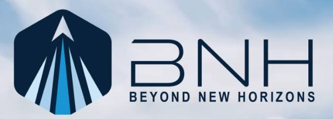
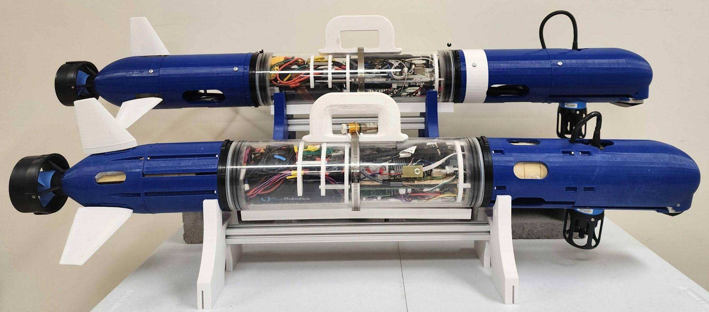
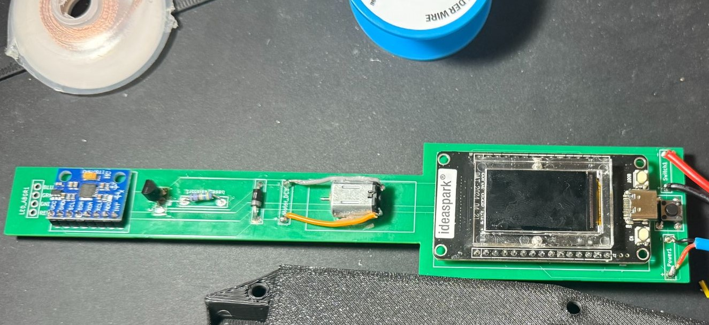

Work Projects

Auxiliary Trigger System
(May 2026 - July 2026)
• Created complex LabVIEW auxiliary trigger system for wind tunnel imaging
• Programmed low-level cRIO/FPGA VI logic to generate 30 precise, configurable waveforms simultaneously
• Authored comprehensive 30-page technical document to guide system operation and user modifications

Active Cooperative Terrain-Aided Navigation Using Inverted USBL; Base Station GUI
(May 2025 - July 2025)
This project was for my internship at the FRoSt Lab. The goal of the project was to have a multi-agent fleet navigating autonomously together, communicating over modem and estimating position based off of differences in the terrain. My specific assignment was to create a GUI for the base station, because when I arrived everything was operating from terminal. Now with the GUI we can see the status of the vehicles while they are in the mission, including location data and system status. This is done by communicating through a base station modem near the shore and connected to the base station computer.
GUI source code: here.
GUI documentation: here.
Personal Projects

Interactive Dueling Wand Game
(September 2025 - December 2025)
I created Interactive Dueling Wands, which are a lot like laser tag.
Each wand has an accelerometer, an RGB LED, a TFT LCD, a button, and a rechargeable battery. There is also a Goblet, which acts like the base station. It sends out a starting signal to the wands, along with a timer for how long a game will be.
There are 9 spells each wand can cast, which are combinations of roll, pitch, and yaw motions, recorded by the accelerometer. When a spell is cast successfully during a game, it is sent out to all the other wands in the area using ESP-NOW.
Each spell affects wands in various ways, such as stunning yourself or opponents, adding or subtracting points, or shielding yourself or others.
I designed a custom PCB for each wand in KiCad, including custom footprints and precise dimensions to fit inside the wand case. This was by far my favorite project so far!
Wand Source code: here.